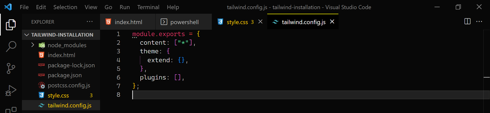

- (01) Create a new folder📂
- (i) I'm using a VS Code editors.
 👆Click for
download
👆Click for
download
- (ii) Right click the newly created folder and open the VS code editors.
- (02) How to installation
- (i) Create index.html file.
- (ii) Open VS code powershell.
- (03) To setup tailwindcss run these command ( Using PostCSS) For more information 👈 click here
- (i) Create package.json
npm init -y - (ii) Install tailwindcss and its peer
dependencies via npm,and also add vite for live reloading.
npm install -D tailwindcss postcss autoprefixer vite - (iii) Create your tailwind.config.js file, and
add -p for postcss.config.js file.
npx tailwindcss init -p - (iv) Create a style.css file.
- (v) Past this in style.css file.
@tailwind base;@tailwind components;@tailwind utilities; - (vi) Link style.css in index.html folder.
<link rel="stylesheet" href="style.css"> - (vii) In your tailwind.config.js file replace content: [ ], with content: ["*"], 
- (viii) In your tailwind.config.js file replace content: [ ], with content: ["*"],
- (ix) Write a sample code inside body element.
<h1 class="text-3xl font-bold underline bg-red-600"> Hello world! </h1> - (x) Add "start": "vite" to your scripts in
package.json
"start": "vite" - (xi)
Run npm start command to start a dev server
npm start - (xii) Install Tailwind CSS IntelliSense
- (04) Core Concepts🧾
- (i)
Handling HoverFor more information 👈
click here
<button class="bg-sky-600 hover:bg-sky-700 ..."> Save changes </button> - (ii)
Hover, focus, and active.
<button class="bg-violet-50 hover:bg-violet-400 active:bg-violet-600 focus:outline-none focus:ring focus:ring-violet-300 ..." > Save changes </button> - (iii)
Responsive DesignFor more information 👈
click here
<img class="w-16 md:w-32 lg:w-48" src="..."> - (iii)
Positioning PropertiesFor more information 👈
click here
<div class="relative bg-red-600 w-full h-screen"> <div class=" absolute top-5 right-5 bottom-5 left-5 bg-green-600"> Positioning </div> </div> - (iii)
Display & Box Model PropertiesFor more information 👈
click here
<div class="flex items-center justify-center w-full h-screen "> <div class="m-10 bg-amber-700 p-10"> Margin <div class="border-solid border-yellow-300 border-2 p-10 bg-yellow-300"> Border <div class="p-10 bg-green-400"> Padding <h1 class="bg-blue-400 p-10"> Display & Box Model</h1> </div> </div> </div> </div>